Part 2 0f 2
GPS Information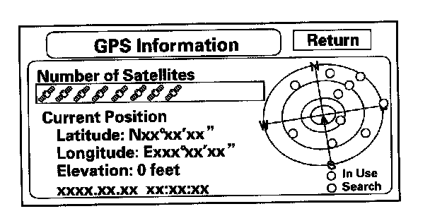
This screen shows the current status of GPS reception. The circular diagram shows the current location of the GPS satellites (yellow balls) as they would appear in the sky. The outer circle represents the horizon (0 degrees elevation). The middle and inner circles represents 30 and 60 degrees respectively. The very center of the diagram (90 degrees elevation) is directly overhead. Nearby obstructions, like tall buildings, will block satellites in that direction. That is why it is necessary to be in an open area to effectively troubleshoot GPS reception issues. The satellites shown on the diagram correspond to the "PRN" number in the "GPS Details" screen. There are always 24 "active" GPS satellites in orbit. Because satellites fail, and have to be removed from service, spares are always parked in orbit, ready to be activated. This is why the PRN (satellite ID number) can be greater than 24.
NOTE:
- To use this screen for troubleshooting, the vehicle should be outside, away from buildings, tall trees, and high-tension wires for at least 10 minutes with the engine running.
- Metallic window tinting on the front or side window or after-market electronic accessories mounted near the navigation unit, GPS antenna, or navigation display can interfere with GPS acquisition.
- The "Number of Satellites" box shows the number of acquired satellites (maximum of 12). It should contain 4 or more icons. If not, troubleshoot for "GPS icon is white".
- The "Current Position" shows latitude, longitude, and elevation (in meters). If there are less than 4 satellites, the elevation can be grossly inaccurate.
- The Date/Time field shows the current date, and also a time that includes daylight savings and other offsets entered by the customer in Setup function "Adjust Time Zone/Clock".
NOTE: Push and hold the "Map/Guide" button, and the "dots" on the diagram are replaced with the "PRN" # (satellite numbers). These numbers correspond to the numbers in the "PRN" column on the "GPS details" screen.
GPS Detail
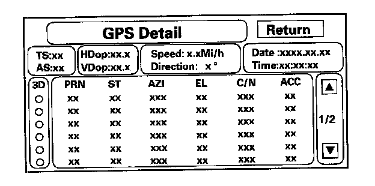
By pressing and holding the MENU button for 10 seconds, a GPS Detail screen appears. This screen displays real time incoming satellite positional data. Most of the information shown on this screen is for factory use, however some of the data can indicate partial GPS signal interference.
- The box TS/AS and HDop/VDop is for factory use.
- The Speed and Direction information is updated in real time when driving, and can be used to detect intermittent speed sensor problems.
- The Date/Time Information is the same as in Setup screen 2 "Adjust Time Zone/Clock".
- If the "3D" icon is shown above the yellow dots, this implies that at least 4 satellites are available for map positioning, and the "GPS" indicator on the map screen will be green. See the Global Positioning System detailed explanation in the "System Description".
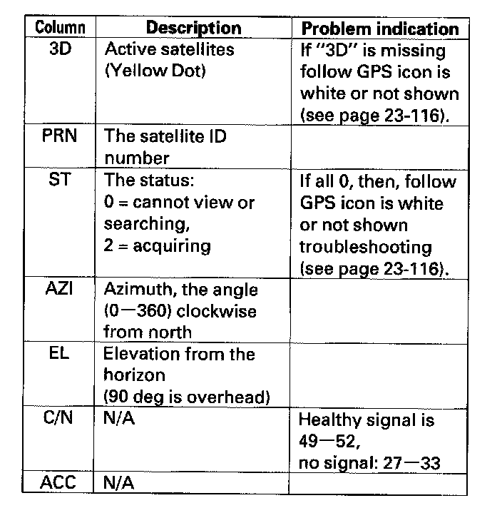
- If the row of data in the table above begins with a "yellow dot", the AZI and EL fields can be used to locate each satellite "PRN" # on the circular GPS diagram (see prior screen).
NOTE: The data shown in the GPS Detail screen is an example only.
Yaw Rate
This diagnostic checks the yaw rate sensor in the control unit. This device detects when the vehicle turns, and repositions the vehicle position icon on the map screen. For more detailed information, see the yaw rate sensor theory of operation under "System Description".
- Sensor" indicates the voltage output from the yaw rate sensor. It should indicate about 2.500 V when stopped.
- Offset" is the reference voltage or standard within the yaw rate sensor. It also should indicate about 2.500 V when stopped.
- A "sensor" output voltage LOWER than the "Offset" voltage indicates that the vehicle is turning to the right.
- A "sensor" output voltage HIGHER than the "Offset" voltage indicates that the vehicle is turning to the left.
- The yaw rate offset and sensor should both indicate about 2.500 V when stopped. If either reads zero or 5.000 V, replace the navigation unit.
- The yaw rate offset and sensor should be within +/� 0.01 V of each other when stopped. The sensor value should change relative to the offset as the car is turned while driving. If not, replace the navigation unit.
Example: Vehicle stopped
Normal
Offset 2.526 V
Sensor 2.516 - 2.536 V
Abnormal
Offset 2.526 V
Sensor 2.623 V
Example: Vehicle turning
Normal
Offset 2.526 V
Sensor 2.678 (right turn) 2.478 V (left turn)
Abnormal
Offset 2.526 V
Sensor 2.623 V (no change on turns)
The settings "CCW Cal Factor", "CW Cal Factor", and "Set" are for factory use only. THIS SHOULD NEVER BE USED.
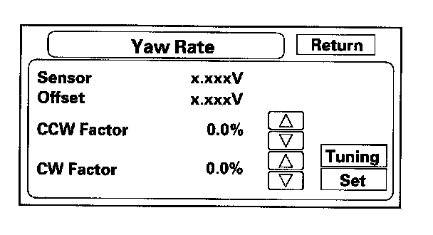
NOTE: Do not try to adjust the yaw rate sensor without instructions from the factory. See next paragraph for tuning.
Yaw Rate Tuning
This diagnostic allows you to graphically display problems with the yaw rate sensor.
- The "ANG-Disp" value accumulates any differences between the "offset", and "sensor" voltages (see Yaw Rate diagnostic). When the sensor is healthy, the random changes in these two voltages generally cancels out, so the value is O. However if one voltage is consistently higher than the other, then the "ANG Disp" value accumulates the constant change.
- The "Reset" button temporarily clears the angular accumulation (ANG-Disp), and clears the display dots.
- Do not touch the "CCW" or "CW", or "Set" buttons. These are used for factory setup only.
For serious problems with the sensor, the stationary test usually confirms whether the sensor is defective.For yaw rate issues related to driving, perform the road test described below.
1. Stationary test: If the "VP" icon spins in place and the "ANG-Disp" value slowly increases or decreases in value, the yaw rate sensor is defective. Replace the Navigation unit.
2. Road test: Drive the vehicle on a very straight road. Enter the diagnostic mode, select "Yaw rate", and touch the "Tuning" button. While driving down a straight road, the white "dots" should trace a straight line across the screen. However, if you are driving on a straight road, and you notice the dots constantly dropping down or heading up as you drive, the navigation unit's yaw sensor is defective. You can touch "Reset" to clear "ANG-Disp", and dotted line.
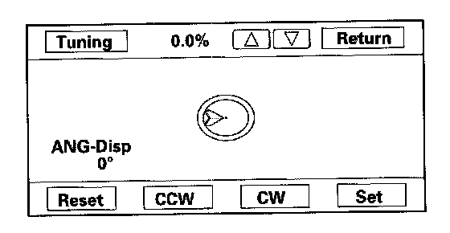
3. If either test fails, please enter "Yaw rate sensor defective" for the problem description, on the "Navigation core return form".
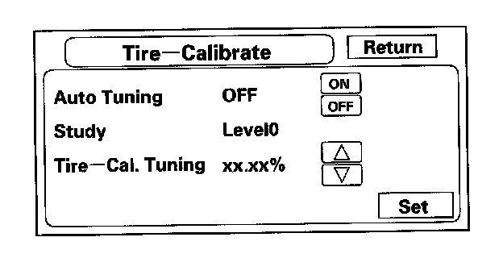
Tire Calibration
As the vehicle moves, the navigation system receives speed pulses from the ECM/PCM. These pulses are converted using a conversion factor to a mph speed that moves the vehicle position (VP) on the map. The navigation system has an internal tuning function that generates and refines this factor based on actual driving. The "Level" indicates the status of the tuning. At navigation initialization, it begins at 0, and increases to 10 as the navigation system is used.
- The "Auto Tuning" is factory set to "ON", and should remain on.
- The "Study" indicates the tuning status. If it is less than 10, the unit is still calibrating.
- The "Tire-Cal. Tuning" and "Set" should not be used. It is for factory use only.
Functional Setup
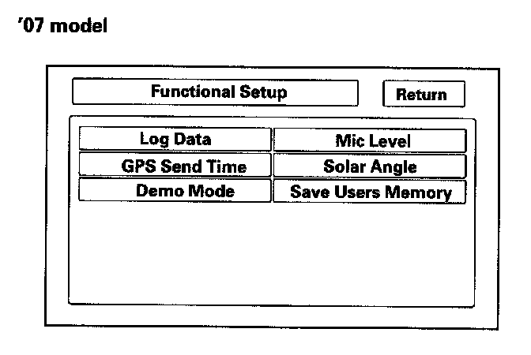
Select the item you want to check.
- Log Data
- GPS Send Time
- Demo Mode
- Mic Level
- Solar Angle
- Save Users Memory ('07 model)
Log Data
This screen allows the factory to collect log data to troubleshoot navigation system issues.
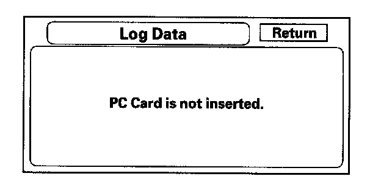
- There is no card in the "PC Card Slot", the screen appears as:
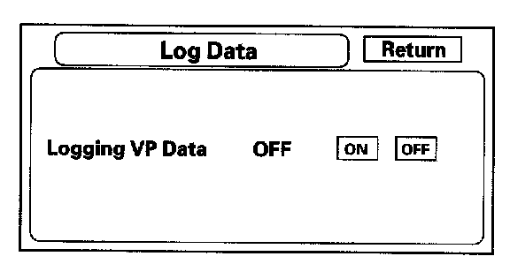
- However, if the factory provides a PC card, insert it into the card slot (label side up). Follow the factory logging VD data procedure for gathering test data and properly ending the test.
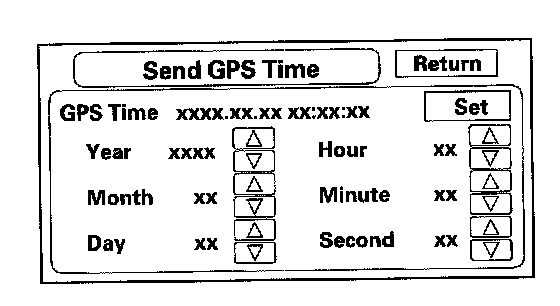
GPS Send Time
This screen is for factory use only. It allows adjustment of the GPS time. This display updates in real time.
- "GPS Time" is the time as received from the GPS satellites. It is in Greenwich Mean Time (GMT).
- Date, Hour, Minute, and "Set" should not be used.
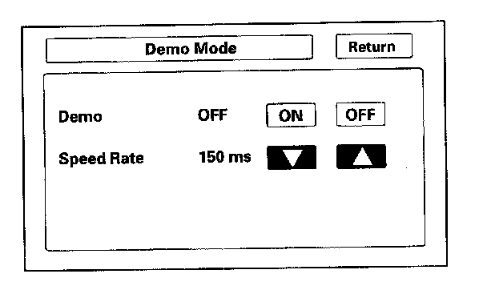
Demo Mode
This screen allows the navigation system to "drive" a route, when the vehicle is stationary. Typical applications include auto shows, and other events. This feature allows a visitor to enter a destination, and see the system "drive" to the destination. No speed signal is needed.
- To initiate the mode select "ON".
- Changing the "speed rate" in ms (milliseconds) is optional, and represents the time between updates of the VP (vehicle position) movement.
- When you increase the rate, the VP slows down because it is updated (moved) at a slower rate.
- When you decrease the rate, VP is faster because it is updated (moved) more frequently.
- 1500 ms is VP at its slowest in demo mode.
- 150 ms is VP at its fastest in demo mode (Default).
- At key off, the setting automatically returns to the default of "Off".
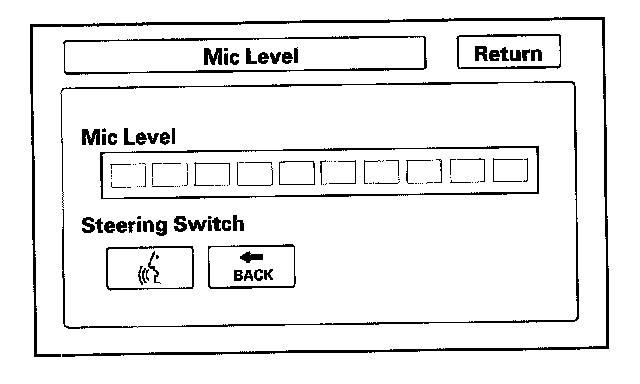
Mic Level
This diagnostic screen allows you to independently test the microphone and the TALK and BACK buttons. They are used to activate the voice control system. The microphone is located near the map light in the ceiling. It is directional, and works best if the voice is coming from the drivers seat.
- Press the TALK button on the steering wheel, and in a normal voice say "testing". The TALK indicator on the screen should momentarily turn green, and the text "Now Recording.." should appear in yellow. If the Mic Level indicator on the screen does not briefly turn green, then check the wiring from the TALK button to the navigation unit. If there is no "Mic Level" movement when you speak, then you should check the wire running from the microphone to the control unit.
- Press the BACK button on the steering wheel. The Cancel indicator on the screen should momentarily turn green. If it does not briefly turn green, then check the wiring from the steering wheel BACK button to the navigation unit.
NOTE: If the radio is off, and there is movement in the indicator-even without speaking, ensure that the vents are not blowing on the microphone. This should resolve voice control complaints such as:
- Sometimes the system does not understand my commands.
- I have to shout at the navi for a command to be recognized.
- The system just says "pardon"
Solar angle
This screen graphically displays the sun's position as determined by GPS.
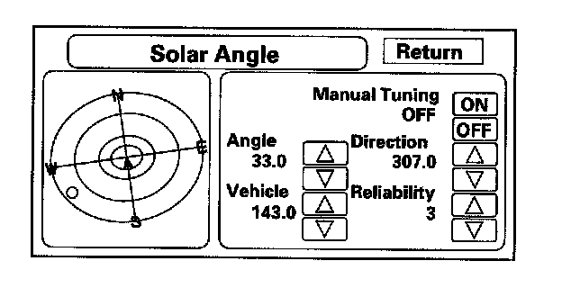
This screen is for factory use only, and allows simulation of this feature for development purposes.
- The "manual tuning" button should always be "OFF"
- The "Angle" is the angle that the sun (shown with red "dot") is above the horizon.
- The "vehicle" value represents the angle, clockwise from North, to the direction that the vehicle position (VP) icon is pointing (always points straight up).
- The "direction" value is the angle, measured clockwise from the VP (straight up) to the suns position.
- The reliability ranges from 1 to 3, and represents the accuracy of the Vehicle Position relative to the sun.
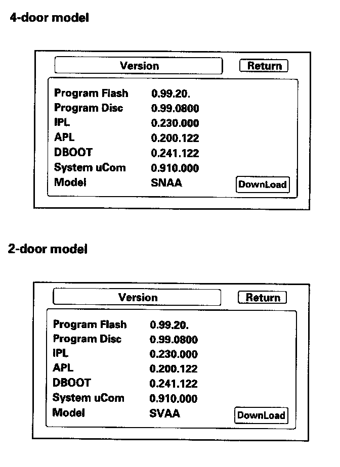
Version
This screen displays the current version of the program, and allows the loading of a new version of the program either from a CD/DVD or from a PC card.
The Program Flash version should always be greater than or equal to the Program Disc version. IPL, APL, DBOOT, and system uCom are for factory use only.
The Model code is SNA for the 4-door and SVA for the 2-door, and is for factory use only. This code is stored on a chip in the navigation unit. Therefore, every model has a unique part number for the navigation unit.
NOTE: If any model number other than SNA or SVA is displayed, replace the navigation unit with the correct part. The model code tells the navigation unit what software to load off the DVD.
Do not use Download, unless instructed to do so by the factory.
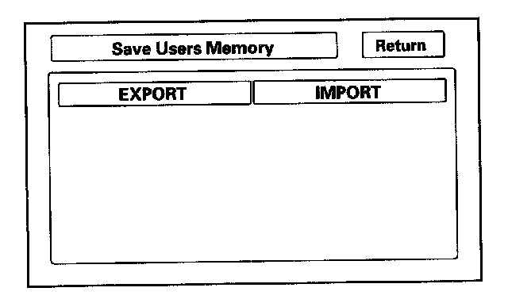
Save Users Memory
When replacing the navigation unit, this function allows the dealer to transfer the customer's personal data to the new navigation unit. The transferred information includes their Setup settings, and personal addresses. The dealer inserts a PC card to the navigation unit, and then selects the "Save Users Memory" function. The two functions in this diagnostic screen are EXPORT and IMPORT. EXPORT saves the customer's data to the PC card, and IMPORT moves the PC card files to the new navigation unit.
- Using a "PCMCIA type II" adaptor and a flash memory chip. The memory chip type uses the Compact Flash (CF),SD flash, and ATA cards. Hard Disc Drive (HDD) cards may not work properly in the system and can overheat or quit functioning. The memory chip with capacity of 64 MB to 2 GB will work. The two files moved to the card during "EXPORT" are less than a Megabyte in size. The PC card formatted using the format "FAT" is only accepted by the system.
- If the card has a "write protection" switch, make sure it is turned off before attempting to use the EXPORT function.
- The customer's files can only be transferred to a new navigation unit. The files cannot be transferred to the navigation unit of the different version and different model.
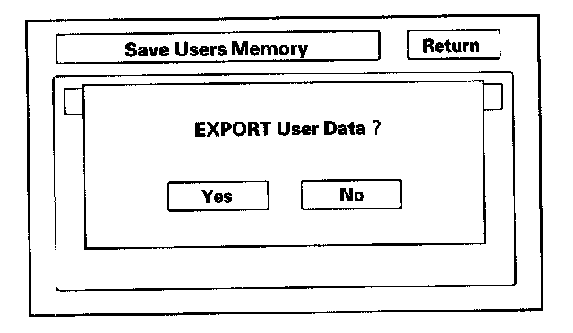
1. Select EXPORT button to move the customer's data from the original navigation unit to the PC card. Select "YES" on the "Export User Data" Confirmation screen. The process takes only a couple of seconds. The system stores two files on the card.
NOTE: If the EXPORT button is grayed out, check the PC card's edge connector, and the pins inside the navigation unit (with a flashlight) for damage.
2. After installing the customer's original DVD in the new navigation unit, allow the system to boot up. Insert the PC card in the new navigation unit and enter the "Save Users Memory" in the navigation system diagnostic mode.
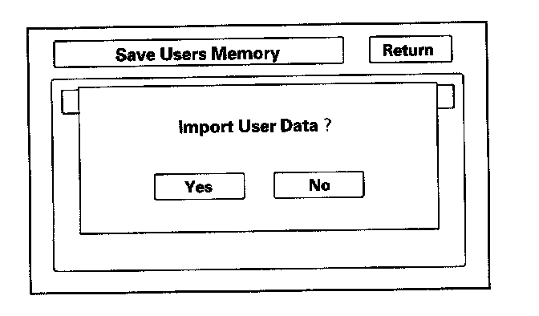
3. Select IMPORT button to moves the two files stored by the EXPORT process from the PC card to the new navigation unit. Select "YES" on the "Import User Data" Confirmation screen. When the transfer is finished (a few seconds) the system will automatically reboot. After the system reboots, remove the PC card from the PC slot.
NOTE: If the IMPORT button is grayed out, check if the "Model" and the "Program Flash" shown on the "Version" screen are the same.
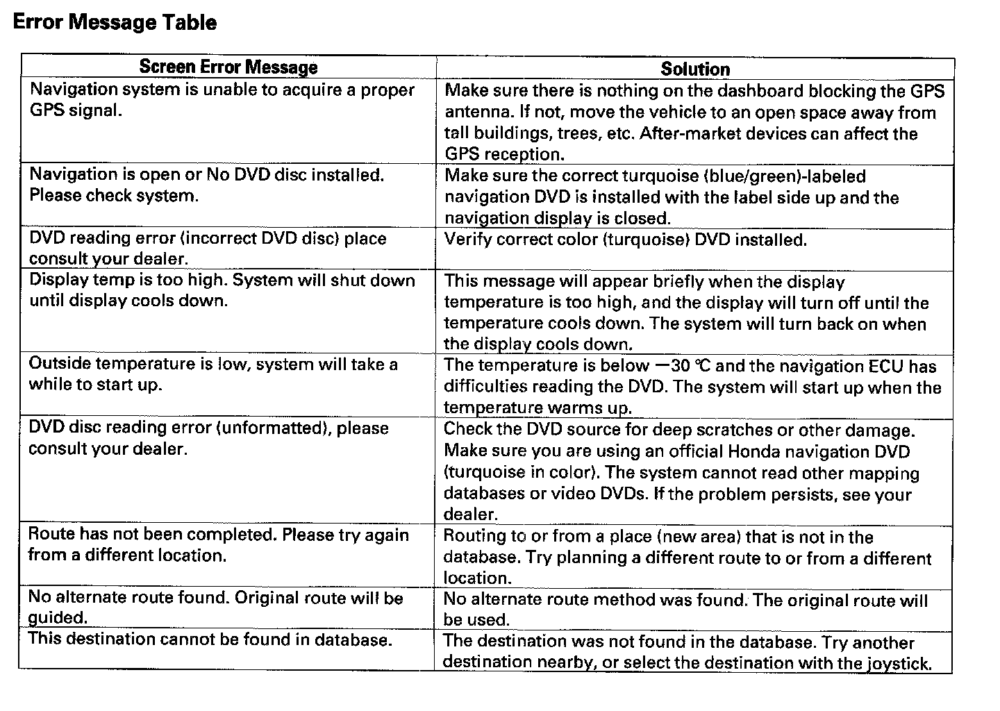
Error Message Table